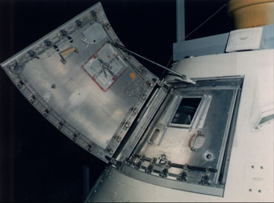

After the fire, amid all the grief and the shock that it could have happened, a thorough fact-finding investigation was conducted. Webb and Seamans asked Floyd L. Thompson, Director of Langley Research Center, to take charge of the inquiry. Thompson and Seamans met at Kennedy at noon on 28 January for a brief session with other Headquarters, Houston, and Cape officials and then adjourned to Complex 34 to see the scene of the accident.12
Seamans returned to Washington that evening, consulted with Webb, and drafted a memorandum formalizing the AS-204 Review Board with Thompson as chairman. Members were astronaut Frank Borman and Max Faget of the Manned Spacecraft Center, E. Barton Geer of Langley Research Center, George W. Jeffs of North American, Franklin A. Long of Cornell University and the President's Science Advisory Committee, Colonel Charles F. Strang of the Air Force Inspector General's office, George C. White of NASA Headquarters, and John J. Williams of Kennedy Space Center.
The board quickly established tight security at Complex 34, impounded documents pertaining to the accident, and collected eyewitness reports. News media representatives swarmed in to cover the story, and their unofficial investigations and semifactual innuendos filled newsprint and airwaves throughout the following weeks. Many looked for quick answers and simple explanations, but by 3 February it was obvious to NASA officials, at least, that no single cause for the accident could be isolated immediately. Seamans and Thompson set up 21 panels to assist the review board. When he realized that full-time participation was expected, Long asked to be excused. He was replaced by Robert W. Van Dolah, an explosives expert from the Bureau of Mines. In other personnel actions, Seamans asked Jeffs to serve as a consultant rather than as a board member and George T. Malley, chief counsel at Langley, to act as legal advisor.13
Anticipating public clamor for answers and reforms, if not postponement of Apollo, NASA officials asked leading members of Congress to hold off on a full-scale investigation until the review board finished its report. Senator Clinton P. Anderson, Chairman, agreed to call the Senate Committee on Aeronautical and Space Sciences into executive session only, for its early investigations. And Representative George P. Miller, Chairman of the House Committee on Science and Astronautics, said Olin Teague's Subcommittee on NASA Oversight would not begin hearings until the Thompson Board had submitted its report. Many newsmen charged that the full story would never be known, since most of the board members were NASA employees; others conjectured that Apollo might be grounded altogether. Meanwhile, the Apollo 204 Review Board went systematically about its business.14
Seamans returned to Florida on 2 February to prepare a preliminary report for Webb. Although this was made public just a few days later, accusations still swirled that the NASA investigation could not be impartial since it was a probe of the agency by itself. There were also sensationalistic charges such as those in Eric Bergaust's book, Murder on Pad 34, a year and a half later. Bergaust said that NASA, even while denying that it was in a space race, had nevertheless placed speed above safety.15
But there was plenty of evidence that meeting schedules was not the whole story. "We're in a risky business," Grissom himself had said in an interview several weeks before the fire, "and we hope if anything happens to us, it will not delay the program. The conquest of space is worth the risk of life." He was later quoted as saying, "Our God-given curiosity will force us to go there ourselves because in the final analysis only man can fully evaluate the moon in terms understandable to other men."16
Congressional leaders did not entirely share the views and misgivings of the press. In a bipartisan move, Senators Anderson and Margaret Chase Smith arranged for publication of the executive hearings of 7 February with Seamans, Mueller, Charles A. Berry (Houston's medical director of manned space flight), and Richard Johnston (spacesuit and life support systems expert). This openness of congressional deliberations helped to defuse media criticism about the objectivity of the ongoing investigation.17
CM-012 was disassembled for the investigation; the crew compartment heatshield (foreground) and aft heatshield are displayed at right above.
CM parts were studied and catalogued in the Pyrotechnics Installation Building at Kennedy Space Center.
Spacecraft 014, nearly identical to 012, was shipped from California to Florida. There the Thompson Board and its panels had the vehicle dismantled for comparison with the remains of 012, which was being taken apart and every piece studied and analyzed. Thompson took advantage of the background and experience of his board members, assigning some to monitor several of the panels. While technicians worked around the clock for the first few weeks, the board held daily recorded and transcribed sessions to consider the findings. Strang was an effective vice-chairman, drawing on his background as an inspector to organize proceedings and prepare comprehensive reports. Van Dolah, the mining explosives expert, had only one panel - origin and propagation of the fire - to monitor, emphasizing the importance of finding that answer. Thompson reserved a single panel, medical analysis, for himself.
Faget had the heaviest load of panels: sequence of events, materials review, special tests, and integration analysis. Borman drew the teams on disassembly, ground emergency provisions, and inflight fire emergency provisions. Williams monitored the spacecraft and ground support equipment configuration, test procedures review, and service module disposition. George White, quality and reliability chief from Headquarters, was responsible for investigations into test environments, design reviews, and historical data. An associate of Thompson's from Langley, Geer handled the groups on the analysis of spacecraft fractures, the board's administrative procedures, and the safety of the investigation operations themselves. Strang was left with the panels taking statements from witnesses, handling the security operations of the inquiry, and writing up the final report.
When Seamans made a second preliminary report to Webb, on 14 February, it was clear that the fire was indeed a fire, and not an explosion leading to a fire. Physical evidence indicated that the conflagration had passed through more than one stage of intensity before the oxygen inside the cabin was used up. By mid-February, the work of tearing down the command module had reached a point where a two-shift six-day week could replace round-the-clock operations.
On the day of the scheduled launch of AS-204, 21 February, the board gave a preliminary briefing to George Mueller and a dozen other top NASA officials in preparation for a major briefing of Seamans. Thompson told Seamans the next day that 1,500 persons were directly supporting the investigation - 600 from government and 900 from industry and the universities - and that the board planned to complete its report by the end of March. Although the history of the fire after it started had been minutely reconstructed, the specific source of ignition had not been - and might never be - determined. On 25 February, Seamans prepared a memorandum for Webb, listing early recommendations by the board that the Administrator could present to Congress:
That combustible materials now used be replaced wherever possible with non-flammable materials, that non-metallic materials that are used be arranged to maintain fire breaks, that systems for oxygen or liquid combustibles be made fire resistant, and that full flammability tests be conducted with a mockup of the new configuration.That a more rapidly and more easily operated hatch be designed and installed.
That on-the-pad emergency procedures be revised to recognize the possibility of cabin fire.18
The astronaut member of the Thompson Board assured NASA's top officials that he would not have been afraid to enter the Grissom crew's spacecraft that January day. Working with the board, however, Borman and everyone else had come to realize the substantial hazards that had been present but not recognized before the fire.19
As its final report was being put together, the review board recognized that there had been ignorance, sloth, and carelessness, but the key word in all the detailed information was "oversight." No one, it seemed, realized the extent of fire hazards in an overpressurized oxygen-filled spacecraft cabin on the ground, according to the summary report the board issued on 5 April:
Although the Board was not able to determine conclusively the specific initiator of the Apollo 204 fire, it has identified the conditions which led to the disaster. . . : 1. A sealed cabin, pressurized with an oxygen atmosphere. 2. An extensive distribution of combustible materials in the cabin. 3. Vulnerable wiring carrying spacecraft power. 4. Vulnerable plumbing carrying a combustible and corrosive coolant. 5. Inadequate provisions for the crew to escape. 6. Inadequate provisions for rescue or medical assistance.Having identified the conditions that led to the disaster, the Board addressed itself to the question of how these conditions came to exist. Careful consideration of this question leads the Board to the conclusion that in its devotion to the many difficult problems of space travel, the Apollo team failed to give adequate attention to certain mundane but equally vital questions of crew safety. The Board's investigation revealed many deficiencies in design and engineering, manufacture and quality control.20
The Thompson Board report came to almost 3,000 pages; divided into 14 booklets, it made up a stack about 20 centimeters high. The six appendixes were: (A) the minutes of the board's own proceedings; (B) eyewitness statements and releases; (C) the Operations Handbook for spacecraft 012; (D) final reports of all 21 panels; (E) a brief summary of management and organization; and (F) a schedule of visible evidence.
But even before the board issued its report, its conclusions were essentially already public. For instance, a month after the fire Mueller had admitted to Congress that, after six safe years of manned flight experience, it was now obvious that NASA's approach to fire prevention had been wrong. Minimizing the possibility of ignition had not been enough. Safeguards against the spreading of any fire must also be developed. Since it would be nearly impossible to design equipment that would protect the crews both on the ground and in space,* any nonmetallic, and perhaps flammable, materials would have to be carefully screened. In particular, the "four Fs" - fabrics, fasteners, film, and foams - required further investigation. Wiring, plumbing, and packaging must be reevaluated, even if it meant reviving the old debate about a one- versus two-gas environmental control system.21
As they delved deeper into the reasons behind the tragedy, NASA officials were confronted by some "skeletons in their closet." Senator Walter F. Mondale raised the question of negligence on the part of management and the prime contractor by introducing the "Phillips report" of 1965-1966. The implication was that NASA had been thinking of replacing North American. But the charges were vague; and, for the next several weeks, no one seemed to know exactly what the Phillips report was. In fact, Webb at first denied that there was such a report. (See Chapter 8.) Mondale also alluded to a document by a North American employee, Thomas R. Baron, that was critical of the contractor's operations at the Cape.
Baron was a rank and file inspector at Kennedy from September 1965 until November 1966, when he asked for and received a leave of absence. He had made observations; had collected gossip, rumor, and critical comments from his fellow employees; and had written a set of condemnatory notes. He had detailed, but not documented, difficulties with persons, parts, equipment, and procedures. Baron had observed the faults of a large-scale organization and apparently had performed his job as a quality inspector with a vengeance. He noted poor workmanship, spacecraft 012 contamination, discrepancies with installations, problems in the environmental control system, and many infractions of cleanliness and safety rules.
Baron passed on these and other criticisms to his superiors and friends; then he deliberately let his findings leak out to newsmen. North American considered his actions irresponsible and discharged him on 5 January 1967. The company then analyzed and refuted each of Baron's charges and allegations. In the rebuttal, North American denied anything but partial validity to Baron's wide-ranging accusations, although some company officials later testified before Congress that about half of the charges were well-grounded. When the tragedy occurred, Baron was apparently in the process of expanding his 55-page paper into a 500-page report.
When his indictments were finally aired before Teague's subcommittee, during a meeting at the Cape on 21 April, Baron's credibility was impaired by one of his alleged informants, a fellow North American employee named Mervin Holmburg. Holmburg denied knowing anything about the cause of the accident, although Baron had told the committee that Holmburg "knew exactly what caused the fire." Holmburg testified that Baron "gets all his information from anonymous phone calls, people calling him and people dropping him a word here and there. That is what he tells me." Ironically, Baron and all his family died in a car-train crash only a week after this exposure to congressional questioning.22
Beyond the Phillips and Baron reports, however, recollections of events and warnings during the past six years made each Apollo manager wonder if he had really done all in his power to prevent the tragedy. In March 1965, for instance, Shea and the crew systems people in Houston had wrestled with the question of the one- or two-gas atmosphere and the likelihood of fire - most of the studies were, admittedly, based on the possibility of fire in space - and concluded that a pure oxygen system was safer, less complicated,and lighter in weight. The best way to guard against fire was to keep flammable materials out of the cabin. Hilliard W. Paige of General Electric had, as a matter of fact, warned Shea about the likelihood of spacecraft fires on the ground as recently as September 1966; and, just three weeks before the accident, Medical Director Charles Berry had complained that it was certainly harder to eliminate hazardous materials from the Apollo spacecraft than it had been in either Mercury or Gemini.23
Although the Senate committee had begun its hearings while the board investigation was in progress, the House subcommittee waited until the final report was ready. By then, the Senate had touched on most of the major issues. As expected, the exact cause of the fire in spacecraft 012 was never determined, but the analysis of all possibilities led to specific corrective actions that eventually satisfied Congress. Throughout the hearings, Borman, still wearing two hats - as an astronaut and as a member of the Apollo 204 Review Board - was very effective. In the course of his testimony, Borman reiterated that the cause of the fire was oversight, rather than negligence or overconfidence. Fire in flight, he said, had been a matter of grave concern since the early days of aviation and the subject of numerous studies. But the notion that a fire hazard was increased on the ground by the use of flammable materials and an overpressure of pure oxygen had never been seriously considered.
On one occasion, when astronauts Walter Schirra, Slayton, Alan Shepard, and James McDivitt had expressed their confidence in NASA's future safety measures, Borman answered a congressman's doubts by saying:
You are asking us do we have confidence in the spacecraft, NASA management, our own training, and . . . our leaders. I am almost embarrassed because our answers appear to be a party line. Everything I said last week has been repeated by the people I see here today. The response we have given is the same because it is the truth. . . . We are trying to tell you that we are confident in our management, and in our engineering and in ourselves. I think the question is really: Are you confident in us?24
When Borman made a plea on 17 April to stop the witch hunt and get on with Apollo, both NASA and North American had responded to the criticisms of the Thompson Board and of Congress. Top-level personnel changes were direct outgrowths of the charges of negligence and mismanagement: Everett E. Christensen at NASA Headquarters resigned as Apollo mission director; George Low replaced Shea as Apollo Spacecraft Program Manager in Houston; and William D. Bergen (formerly of the Martin Company) took over from Harrison Storms as president of North American's Space and Information Systems Division. Bergen brought with him two associates from Martin: Bastian Hello to run the Florida facility for North American and John P. Healy to manage the first manned Block II command module at Downey. Healey was expected to set precedents in guiding a nearly perfect spacecraft through the factory.25
Most North American officials weathered congressional criticism and pointed out that they agreed, in part, with the formal findings and recommendations of the Thompson Board.** But North American objected to the word "chronic" in describing problems with the environmental control system and defended its electrical wiring practices as functional rather than beautiful. Concurring that the fire probably started from an electrical spark somewhere near the environmental unit, the manufacturers also agreed with NASA on why the fire spread:
Not withstanding this emphasis on the potential problems created by combustibles in the spacecraft, it can be seen in retrospect that attention was principally directed to individual testing of the material. What was not fully understood by either North American or NASA was the importance of considering the fire potential of combustibles in a system of all materials taken together in the position which they would occupy in the spacecraft and in the environment of the spacecraft.`26
Leland Atwood and Dale Myers used charts to emphasize to Congress the changes that the company intended to make in both construction and test operations. North American would assign a spacecraft manager and a personalized team to each vehicle, appoint an assistant program manager whose only concern was safety, place additional controls on changes made during modification and checkout phases, and assign personal responsibility to specific inspectors. The company would also revise its fabrication and inspection criteria; expand its quality standards, issuing a handbook with better visual aids; install more protected wiring and plumbing; and insist upon additional major inspections. Myers then discussed fire-related hardware changes: the new unified hatch, materials reevaluation, fluids and plumbing reassessment, electrical system improvements, revised on-the-pad operations, and flammability tests.27

The command module's two-hatch system (above) was replaced by the single crew hatch, with emergency features as shown in the drawing (below)
In Houston, Faget's engineering and development activity ran all sorts of tests on materials and components, and Robert Gilruth sent Borman with a Houston "tiger team" to Downey in mid-April.*** The astronaut was to make on-the-spot decisions on contractual changes for the unified hatch, better wiring and plumbing techniques, and other improvements that had been planned even before the accident. Borman's tiger team watched closely, lending its assistance when necessary, as North American engineers went over the spacecraft piece by piece.28
What had happened to the command module, obviously, could just as well happen to the lunar module. Immediately after the fire, Thomas J. Kelly and a host of Grumman workers began a comprehensive review of materials in the lunar lander. Low sent Robert L. Johnston, a materials expert, to help Kelly's group. Grumman replaced nylon cloth in the spacecraft, relying mostly on Beta fiber (an inorganic substance developed by the Corning Glass Works, that would not catch fire nor produce toxic fumes). Perhaps the most important application of this material was as "booties" around circuit breakers, to lessen the possibilities of electrical shorts. In other areas, Grumman worked on its forward hatch, to ensure a crew exit within 10 seconds; the environmental control system; and a cabin and exterior pressure equalization system. All in all, the changes would add a three- to four-month delay in deliveries to the schedule trouble the lander was in even before the fire. Phillips sent a group headed by Roderick O. Middleton of Kennedy to look into Grumman's quality control and inspection procedures. Middleton's audit team completed its report in mid-May, giving Grumman generally good marks in the manufacturing process.29
The CM wiring harness goes through x-ray inspection.
In the stand at North American, an electrical installer for CM-101 - now scheduled for the first manned Apollo flight - carefully replaces tools in an accountability kit. (A wrench had been found embedded in the electrical wiring of CM-012, when it was taken apart after the fire.)
In Washington, on 9 May, Webb was again called on the carpet by the Senate committee. The Phillips report was again a major subject for debate, this time in a context that made it appear that the NASA-North American relationship was in danger of becoming a political football. The very next day, however, congressional questioning began to wind down. As Congressman John W. Wydler put it:
Essentially the story of the Apollo accident is known to the American people. We have admissions and statements about the things that NASA . . . and . . . North American Aviation [were] doing wrong. . . . But I want to say this to you, Mr. Webb. Over the past few years . . . I probably have been one of the most critical members on this committee of NASA. . . . It appeared to me . . . that you have had it too easy for your own good from this committee. This is not a criticism being directed at you or the Space Agency, but a criticism being directed inwardly at the Congress and this committee. I feel right now that you got less criticism than you deserved [in the past, but now] you are getting more criticism than you deserve. I don't intend to add to it for that reason.
Wydler did not really stop there, of course, but the investigation did begin to fade away. NASA and North American began implementing the technical recommendations. To some degree, the accident actually bought time for some pieces of Apollo - the lunar module, the Saturn V, the guidance and navigation system, the computers, and the mission simulators - to catch up with and become adapted to the total configuration.30
Meanwhile, on 23 April 1967 the Soviet Union announced the launching of Vladimir M. Komarov aboard a new spacecraft. Soyuz I appeared to be functioning normally at first. On its second day of flight, however, the craft began to tumble, and Komarov had to use more attitude fuel than he wanted to get the ship under control. He tried to land during his 17th circuit but could not get the proper orientation for retrofire. Komarov succeeded in reentering on the 18th revolution, but his parachute shroud lines entangled. The cosmonaut was killed on impact. So both Soyuz I and Apollo 1 put their programs through traumatic reassessments. No one found any consolation in a "rebalanced" space race. In fact, Webb took the occasion to emphasize the need for international cooperation by asking: "Could the lives already lost have been saved if we had known each other's hopes, aspirations and plans? Or could they have been saved if full cooperation had been the order of the day?"31
* In August 1966, three fire extinguishers, weighing only 5.7 to 6 kilograms, were evaluated for spacecraft 012 and subsequent flights. The extinguisher selected would be stowed on liftoff for the first manned flights. On later missions, it would be mounted in brackets. All three used Freon FE 1301, a most efficient extinguishing agent on the ground. Under space conditions, however, the chemical worked more slowly, required a higher level of saturation of the flammable materials, and, even worse, generated a gas that might, in sufficient quantities, prove fatal to the crew. Other chemicals would of course be tested, but this would take time.
** The widows of Grissom, White, and Chaffee sued North American for negligence in spacecraft manufacture. In 1972, out-of-court settlements to the three totaled $650,000.
*** Members of the tiger team were Douglas Broome, Aaron Cohen, Jerry W. Craig, Richard E. Lindeman, and Scott H. Simpkinson.
12. Robert C. Seamans, Jr., to James E. Webb, "Report on Apollo 204 Review Board Discussions," 3 Feb. 1967, reprinted in RARB, pp. 3-47 to 3-50.
13. Seamans to Webb, "Further report on Apollo 204 Review Board Activities," 14 Feb. 1967, and "Interim report of the Apollo 204 Review Board," 25 Feb. 1967, reprinted in RARB, pp. 3-51 through 3-59. For the establishment of the investigation team, see ibid., pp. 1-5 to 1-13 and 3-1 to 3-7.
14. Senate Committee on Aeronautical and Space Sciences, Apollo Accident, pt. 1, p. 1; RARB, p. 3-62; "Apollo Probe to Be Public," Baltimore Sun, 31 Jan. 1967; "Space Program Goes Underground," Houston Chronicle, 3 Feb. 1967; William Hines, "Washington Close-Up: NASA Probe Value Doubtful," Washington Evening Star, 9 Feb. 1967.
15. ["Interim Report of Apollo 204
Review Board"], 22 Feb. 1967; "Text of the Report by Official
of NASA on the Fatal Apollo Spacecraft Fire," New York
Times, 5 Feb. 1967; Erik Bergaust,
(New York: Putnam, 1968), p.212. NBC presented a television broadcast on
5 April, "Crossroads in Space," narrated by Frank McGee, that
was critical of all facets of NASA and Apollo, according to an article
by Harriet Van Horne in the New York World Journal Tribune,
6 April 1967.
16. "Space: To Strive, to Seek, to
Find, and Not to Yield . . . ," Time, 3 Feb. 1967; Virgil
"Gus" Grissom, Gemini: A Personal Account of Man's
Venture into Space, ed. Jacob Hay (New York: Macmillan, 1968), p.
175.
17. Senate Committee, Apollo
Accident, pt. 1.
18. RARB, pp. 3-23, 3-47 to
3-59, 5-2.
19. Ibid., p. 3-62.
20. Ibid., p. 5-12.
21. Ibid.; House Subcommittee,
Investigation, 1, pp. 10-12, 17, 277-352; Senate Committee,
Apollo Accident, pt. 3, pp. 192-266, pt. 4. pp. 307-13;
William M. Bland, Jr., to Head, CSM Contract Eng. Br., "Allocation
of Space for Installation of Fire Extinguishers Aboard SC 012 and
Subsequent Manned Apollo Flights," 17 Aug. 1966; William L. Gill
memo, "Evaluation of Freon 1301 fire extinguishing agent in 5 psia
O2," 31 Aug. 1966, with enc., Andris A. Staklis, subj. as above, 22
Aug. 1966.
22. Senate Committee, Apollo
Accident, pt. 2, pp. 125-27, 130, 131, pt. 3, pp. 228-30; Samuel
C. Phillips to J. Leland Atwood, 19 Dec. 1965, with encs.; Thomas Ronald
Baron, "An Apollo Report," [ca. January 1967]; typescript,
North American's rebuttal to the Baron report, [ca. January 1967]; House
Subcommittee, Investigation, 1, pp. 379-84, 483-501;
William Hines, "Apollo Had Poor Parts, Ex-inspector Charges,"
Washington Evening Star, 23 March 1967; Howard Benedict,
"20,000 Failures Preceded the Tragedy of Apollo 1,"
Washington Post, 12 March 1967; "NAA Apollo Critic
Dies in Car Accident," Space Business Daily, 8 May
1967; "Apollo Critic, Wife, Daughter Killed in Crash,"
Atlanta Constitution, 29 April 1967.
23. Joseph F. Shea to NASA Hq., Attn.:
Phillips, "Apollo atmosphere selection," 8 March 1965; R.
Wayne Young TWX to Grumman, Attn.: Robert S. Mullaney, 23 May 1966;
Clinton L. Taylor TWX to North American, Attn.: James C. Cozad, 25 May
1966; Gill to Chief, Apollo Support Office, Attn.: Donald F. Hughes,
"Comparison of fire hazard in 95 +/- 5% oxygen at 21.0 versus 14.7
psia," 11 Aug. 1966; Hilliard W. Paige to Shea, 30 Sept. 1966; Shea
to Paige, 5 Dec. 1966, with enc., Bland to Mgr., ASPO, "Comments on
Mr. H. W. Paige's letter to you concerning the fire hazard in our
spacecraft," 23 Nov. 1966, with enc., "Apollo Spacecraft Non
Metallic Materials Control Program," n.d.; Charles A. Berry to Dep.
Dir., MSC, "Management Program for Control of Hazardous Spacecraft
Materials," 4 Jan. 1967.
24. James B. Skaggs memo, "Apollo
Weekly Status Report," 14 April 1967; House Subcommittee,
Investigation, 1, especially pp. 436-47. See also Karl
Abraham, "NASA Paid for Report Warning of Fire Hazard,"
Philadelphia Evening Bulletin, 8 Feb. 1967; Neal Stanford,
"Fire Danger Considered Before Apollo Decision,"
Christian Science Monitor, 9 Feb. 1967.
25. NASA, Astronautics and
Aeronautics, 1967, p. 39; "Key Personnel Changes," MSC
Announcement 67-51, 7 April 1967; "Apollo Chief Shifted to
Washington," Washington Post, 6 April 1967; Jim
Maloney, "NASA Job Changes," Houston Post, 6
April 1967; "Former Apollo Chief's Whereabouts a Mystery,"
Washington Evening Star, 12 April 1967; Mitchell Gordon,
"Echoes of Apollo: A Spacecraft Tragedy Sends Tremors Through North
American's Ranks," Wall Street Journal, 23 June 1967;
William B. Bergen, interview, El Segundo, Calif., 2l June 1971; Beirne
Lay, Jr., Earth-Bound Astronauts: The Builders of
Apollo-Saturn (Englewood Cliffs, N.J.: Prentice-Hall, 1971), pp.
124-37.
26. House Subcommittee,
Investigation, 1, pp. 175-76.
27. Ibid., pp. 141-57.
28. George M. Low to Dir., Engineering
and Development (E&D), "Test Request - Proposed Block II Flame
Retardant Coatings," 14 April 1967; Richard S. Johnston to Dir.,
E&D, "Fire detection system development," 17 April 1967;
Robert R. Gilruth to Mgr., White Sands Test Facility, "Flammability
tests of non-metallic spacecraft materials," 20 April 1967; Kenneth
S. Kleinknecht memo, "Block II redefinition, command and service
modules," 27 April 1967, with enc., subj. as above, 24 April 1967;
"Configuration Management Plan for the Block II Redefinition,"
8 May 1967, signed by Frank Borman and Wilbur H. Gray; Kleinknecht memo,
"Block II redefinition, command and service module," 8 May
1967, with enc., "Task Team Block II Redefinition, Command and
Service Modules," 5 May 1967; Low memo, "Nonmetallic Materials
Selection Guidelines," 8 May 1967, with enc., J. W. Craig and M. W.
Steinthal, subj. as above, n.d.
29. Thomas J. Kelly, "Apollo Lunar
Module Mission and Development Status," paper presented at AIAA 4th
Annual Meeting and Technical Display, AIAA paper 67-863, Anaheim,
Calif., 23-27 Oct. 1967, pp. 11-12; Low memo for record, "NASA-GAEC
meeting, May 9, 1967," 11 May 1967; Senate Committee, Apollo
Accident, pt. 6, pp. 546-48; Robert G. Button to Roy M. Voris and
Gil Perlroth, "Suggested Project - LM Flammability," 8 Dec.
1967; Maxime A. Faget to Owen E. Maynard, "Beta booties on the LM
circuit breaker panels," 7 Nov. 1967; Phillips TWXs to MSC et al.,
14 April and 1 May 1967; Phillips to MSC and KSC, Attn.: Gilruth and
Debus, "Audit of Apollo Lunar Module Quality and Inspection
Operations," 18 May 1967, with encs., Phillips TWX to MSC et al., 1
May 1967, and Capt. Roderick O. Middleton et al., to Phillips, subj. as
above, 17 May 1967, with enc.
30. Senate Committee, Apollo
Accident, pt. 6; House Subcommittee, Investigation, 1, p. 544;
"Astronauts Aided by Apollo Delays," Detroit
News, 24 March 1967; "High Hopes for the Moon Shot,"
Business Week, 15 April 1967; "Saturn 5 Defects lay
Delay Apollo Even More," Houston Post, 24 May 1967;
Howard W. Tindall, Jr., memo, "In which is described the Apollo
spacecraft computer programs currently being developed," 24 March
1967.
31. NASA, Astronautics and
Aeronautics, 1967, pp. 124-25; William Hines, "Soviet Moon
Date Imperiled," Washington Evening Star, 24 April
1967; Arthur Hill, "Parachute Trouble Grows with Weight of
Spaceship," Houston Chronicle, 24 April 1967;
"Russian Cosmonaut Killed," Houston Post, 25
April 1967; Julian Scheer TWX to all NASA elements, ["Webb's
statement on Komarov's death"], 24 April 1967; Edward Clinton and
Linda Neuman Ezell, The Partnership: A History of the Apollo Soyuz
Test Project, comment edition, June 1976, Chap. III.